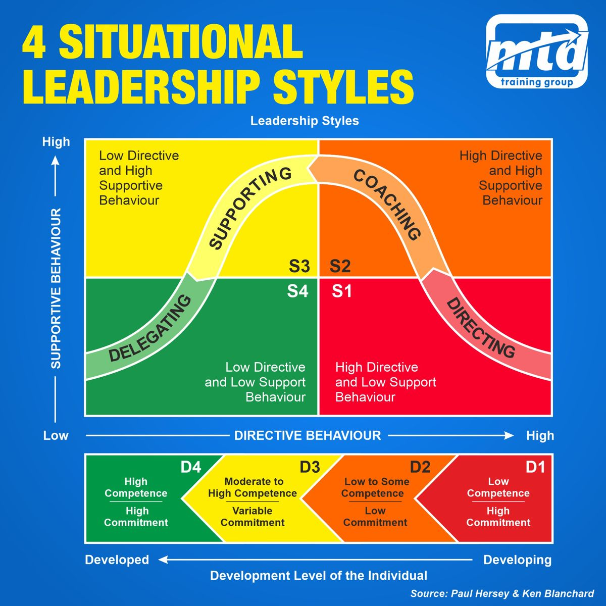

🔙index_modellenschema¶
Situational Leadership Model (Hershey-Blanchard)¶
Essentie¶
Dit is een theoretisch model dat is ontwikkeld door Paul Hersey and Ken Blanchard.
Geen enkele leiderschapsstijl is goed in elke situatie.
Vandaar ook de naam "Situationeel leiderschap", om dynamisch en bewust de leiderschapsstijl te kunnen aanpassen aan de behoeften van het team, en de context.
Op de twee assen heb je
Verticaal: Ondersteunend, van laag naar hoog, hierbij geef je de middelen om het werk uit te voeren (de hengel).
Horizontaal: Directief, van laag naar hoog, hierbij geef je instructies over het werk. (waar, hoe, en zelfs wat)
 Het omschrijft 4 verschillende leiderschapsstijlen:
Het omschrijft 4 verschillende leiderschapsstijlen:
- Directing (Telling)
- hoog directive, laag supportive
- Vooral geschikt voor teamleden met weinig competenties voor de taak, en duidelijke begeleiding nodig hebben.
- Ook perfect voor taken die nadrukkelijk exact uitgevoerd moeten worden, bijvoorbeeld het maken van minutie.
- specifieke instructies en micro-management.
- Coaching (Selling)
- hoog directive, hoog supportive
- geeft richting, maar is ook gericht op ontwikkeling/zelfontplooing van de teamleden. Is bereid redeneringen willen uitleggen, en duld zelfs openlijke discussie onder mom van het vergroten van betrokkenheid.
- Deze leider is geschikt voor teamleden met wat ervaring, maar wellicht nog wat motivatie of zelfvertrouwen missen.
- Supporting (Participating)
- laag directive, hoog supportive
- Deze leider ondersteunt en motiveert, zonder strenge voorwendselen.
- Deze stijl werkt goed voor teamleden die al veel ervaring hebben, maar soms toch nog begeleiding of een klankbord nodig hebben.
- Delegating
- laag directive, laag supportive
- Deze leider vertrouwt erop dat teamleden zelfstandig kunnen werken, en vertrouwen er ook op dat ze zelf aan de bel trekken als ze ondersteuning nodig hebben.
- Deze stijl is vooral goed voor teamleden met veel ervaring, en het liefst een intrinsieke motivatie om het werk goed te doen.

En om het nog duidelijker te maken heeft dit model specifiek ook nog eens een horizontale balk, die de kleuren nog eens uitlegt eronder.
Relatie met Veranderkunde¶
Handig om te kijken naar het type leiderschap, voor/tijdens/na de verandering.
Type leiderschap definieren, zoals boven omschreven is er voor elke situatie wel een ideaal type leiderschap. In het kort is het een reflectiemodel om te kunnen evalueren en reflecteren op de werkelijkheid.
Relatie met andere modellen¶
Zelfreflectie¶
Ik heb van dit model geleerd:
Theorie¶
I. Kennis Ik vind dit een erg interessant model, had er nog nooit eerder van gehoord. II. Inzicht Het lijkt me zeer goed toepasselijk als er veranderingen zijn qua context van het team, danwel de leden, danwel de managers. III. Toepassing Ook bij een wijziging van de werkzaamheden zou het erg handig zijn om te evalueren wat de beste aanpak zou zijn.
Persoonlijk¶
I. Kennis Als leider zou ik dit goed kunnen toepassen, om mij bewust te worden van hoe ik mijn team steun of richting geef. II. Inzicht Ook is het belangrijk om goed door te hebben hoe je dit uitvoert, want een fout hier zou voor een gevoel van disresprect kunnen zorgen voor ervaren teamleden als ik te veel directie geef maar ook met name teamleden die nieuw zijn aan de werkzaamheden heel erg in de steek gelaten voelen mits ik bijvoorbeeld te weinig directie geef. III. Toepassing Andersom zou niet genoeg support voor een ervaren teamlid die hier wel om vraagt bijvoorbeeld kunnen overkomen als een manager die niet luistert.
Relationeel¶
I. Kennis Ik denk juist dat dit relationeel uitermate goed is. II. Inzicht Ook als teamlid zou ik dit kunnen gebruiken om aan mijn manager aan te geven wat ik van hem/haar wil. III. Toepassing Zels het open bespreken van dit als twee collega's zou baat hebben naar mijn idee. Je zou kunnen vragen, wil je mijn ondersteuning of juist wat meer instructie van me krijgen? Hier direct en open over zijn kan iedereen denk ik waarderen, ook maak je op deze manier samen afspraken, en dat is altijd beter dan alleen verwachtingen achteraf proberen te matchen.